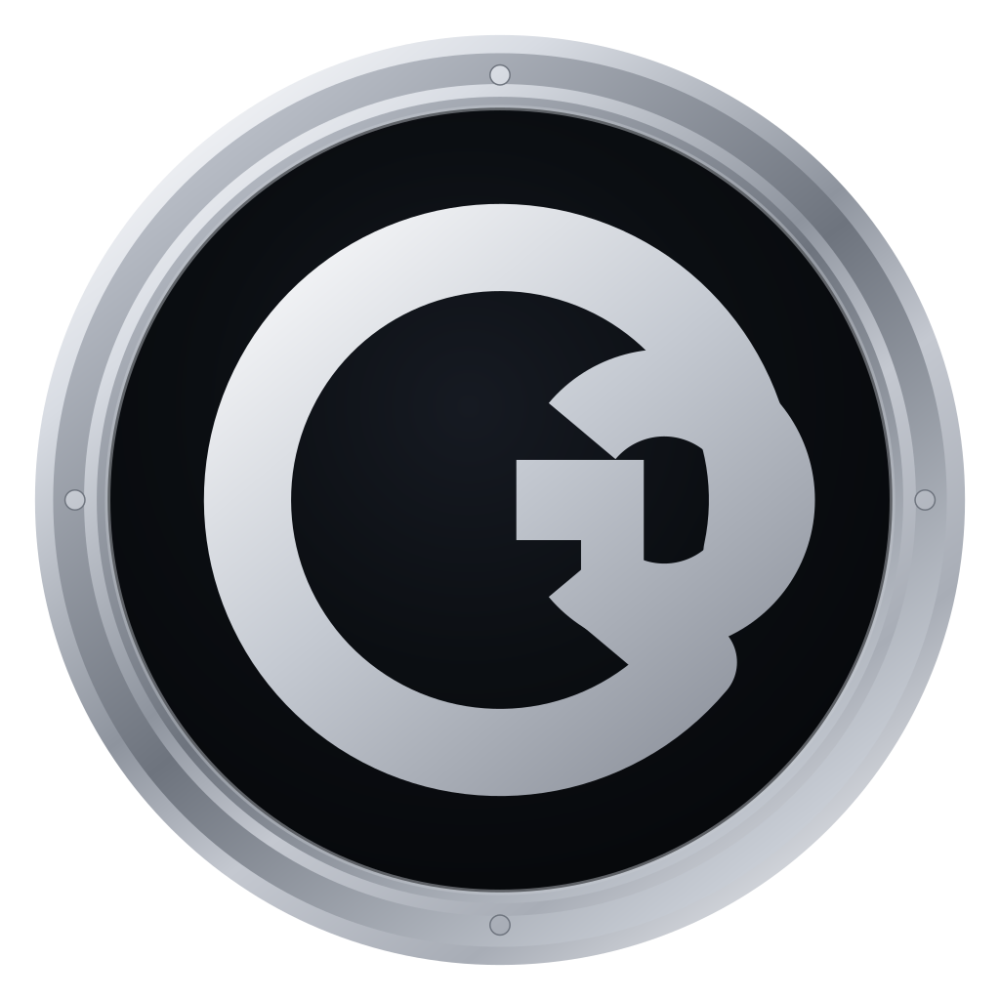
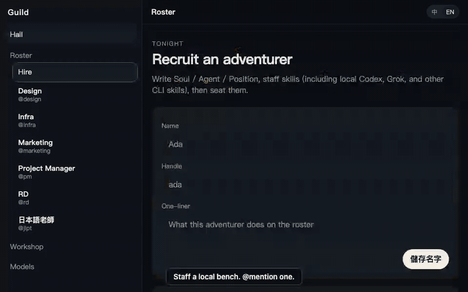

Branch a quest
Open a branch from a message. The child keeps the roster, Channel.md, and up to 20 messages. Close can merge MEMORY.md back to the parent.

Not another omniscient chat. Staff named seats. A channel is an open contract. Next move is npx @kevin5251984/guild web — opens http://127.0.0.1:7420.
00
The hall on :7420. This tab is a fixture of the same idea.

Hall
The hall on :7420. This tab is a fixture of the same idea.
01 · v0.2.23
This page is a four-language fixture. The product on :7420 is English chrome with five Chinese seat names — not a four-language app.
Open a branch from a message. The child keeps the roster, Channel.md, and up to 20 messages. Close can merge MEMORY.md back to the parent.
Same loopback hall. Read, reply, stop, steer — over HTTP. Attachments, branches, and the trajectory panel stay on the desk.
Default model path with no API key. Those prompts go to opencode.ai. Switch provider in /settings.
Effort only where the model supports it. Fast picks low, then minimal — not a second provider.
@handle does not hire a seat. @quest / @channel / @all broadcast. Numbered lines share a wave; 完成後 / 最後 wait.
Foreign Origin is refused. Host browse hides secret files. MCP HTTP shows env keys, values as ***.
02 · Try the hall
Click @pm — only PM answers. Click @rd — a different seat. Edit Voice, ask PM again — same person, different voice.
03 · How a turn runs
@handle → chatReply → HarnessService.turn → runAgentLoop
That text is the answer. The loop stops.
gateTool → Promise.all → append results → ask again. Bounded. At the bound it asks for a final answer.
steer reaches the model next round as <user_steer>. Stop aborts the turn AbortSignal. Skill catalog is a name + summary; the body loads only when the model calls skill.
Guild borrowed one Hermes shape for the browser snapshot — never the live Chrome profile. The turn loop is Guild’s own. Not a Codex app-server harness. Not an OS jail. Default sandbox is full_access.
Files: packages/daemon/src/harness.ts · generate.ts · tools.ts · browser.ts.
04 · What runs locally
Node ≥ 22.19. One line, no clone. The hall is http://127.0.0.1:7420.
http://127.0.0.1:7420.MIT · $0
Not a SaaS seat. Not a cloud workspace. A local guild.
npx @kevin5251984/guild web # http://127.0.0.1:7420 # checkout instead — pnpm 10.x pnpm i pnpm test pnpm dev
| Limit | Fact |
|---|---|
run / write | Your shell. Unset GUILD_SANDBOX = full_access. |
| MCP | Host Claude / Cursor / Codex stdio is live with no import step. |
| Browser | Snapshots last_used Chrome into ~/.guild/browser-profile/chrome. Set GUILD_BROWSER_REAL_PROFILE=0 for empty. |
| Origin | Foreign Origin is refused. Missing Origin is allowed. Not a login. |
| Host files | Denylist: oauth.json, models.json, mcp.json, credential files. Home is still browsable. |
| MCP env | HTTP shows keys; values are ***. The child still gets the real env. |
Read SECURITY.md before you point this at a machine you care about.
05 · FAQ
No. OpenCode Free is the default path. Those prompts go to opencode.ai. Switch provider in /settings.
No. Interactive preview — no model calls. Fixed replies. This tab does not talk to 127.0.0.1:7420.
No. Node ≥ 22.19 and npx @kevin5251984/guild web is enough. pnpm is only if you are reading the code.
run and write do?Your shell. Unset GUILD_SANDBOX = full_access. Read SECURITY.md before you point this at a machine you care about.
Free. Open source under the MIT license.